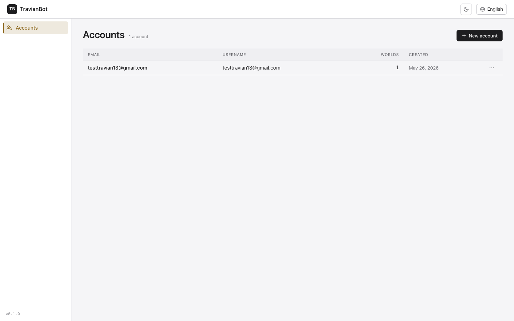
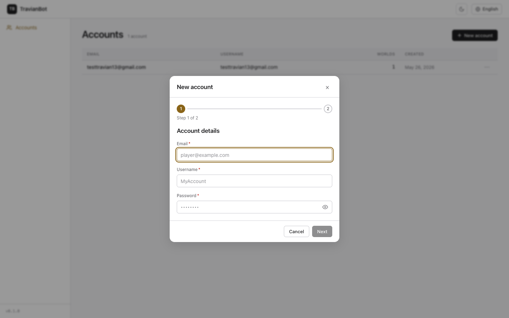
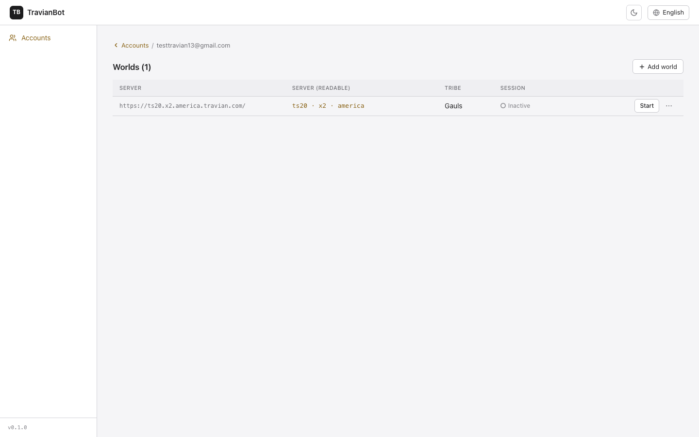
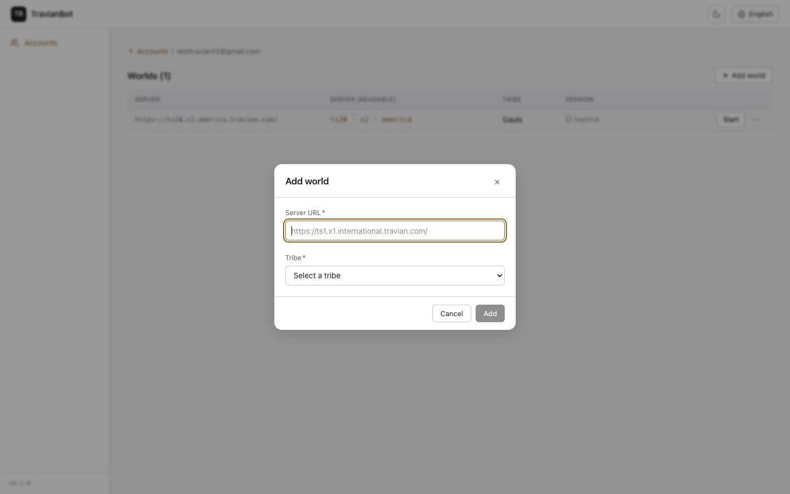
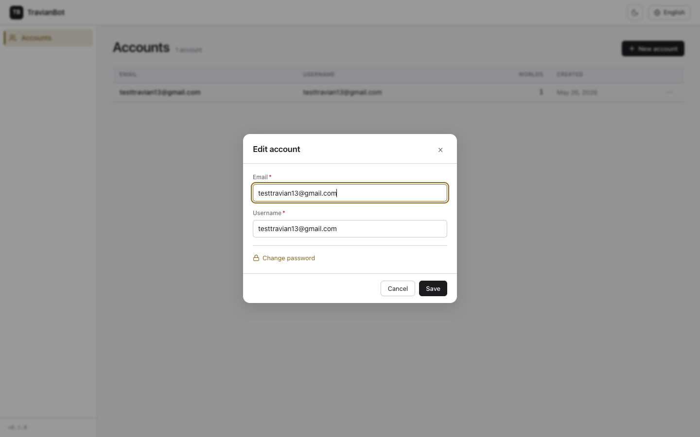
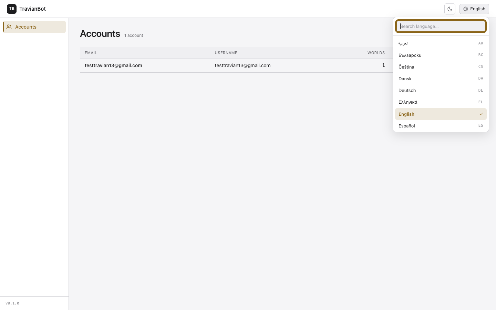

How to manage your Travian accounts and their worlds from the panel.
Panel version v0.1.0 · Available in 25 languages
The TravianBot panel is where you register your Travian accounts and,
within each one, the worlds (servers) you play on — each world with its tribe. From here
you also start the bot's session in a world. An account can have several worlds, each with a different tribe.
1The Accounts screen
This is the home screen. It lists all your registered accounts, with their email, username,
number of worlds and creation date.

List of registered accounts.
Click + New account (top right) to register an account.
Click any row to open that account's detail and its worlds.
The ⋯ button on each row opens the menu with Edit account
and Delete account.
2Create a new account
Clicking + New account opens a two-step wizard.

Step 1 — Account details.
Step 1 — Account details:
Email: your Travian lobby email (it identifies the account; must be unique).
Username: a display name to recognize it.
Password: your Travian password. It is stored encrypted and never shown again.
Use the eye icon to reveal what you type.
Click Next to go to the second step.
Step 2 — First world: you enter the server URL and pick the tribe (the same fields
as in "Add a world", below). Clicking Create account creates the account with
its first world.
Duplicate email: if the email is already registered, the warning appears
under the Email field and you stay on step 1 to fix it.
3Account detail and its worlds
When you open an account you see its worlds. For each world it shows the server in a readable format
(ts20 · x2 · america), the tribe, the date and the session status.

Account detail with its list of worlds.
The breadcrumb ‹ Accounts (top) takes you back to the list.
Click + Add world to register another world in this account.
Each world's status can be Inactive, Connecting…,
Active or Error.
Click Start to begin the bot's session in that world.
Start performs a real Travian login: it opens Chrome, signs in with
your credentials and may take a few seconds. When it succeeds, the world becomes Active
and you can Enter its space. To stop it, click Stop. (A world cannot be
deleted while its session is active.)
4Add a world
From an account's detail, + Add world opens this form.

Form to add a world.
Server URL: paste the full server address, e.g.
https://ts1.x1.international.travian.com/. The panel then shows it in a readable way
(server · speed · region).
Tribe: pick one of the 7 playable tribes (Romans, Teutons, Gauls, Egyptians, Huns,
Spartans, Vikings).
Click Add. If that server is already in the account, it warns you.
5Edit or delete an account
From an account's ⋯ menu in the list, choose Edit account.

Edit account modal.
You can change the Email and the Username.
The password is not shown for security. To change it, click the
Change password link and the field will appear. If you don't touch it,
the password stays the same.
Click Save.
Delete account (also in the ⋯ menu) removes the account and all its
worlds. It asks for confirmation, and is not allowed if any world has an active session (stop the session first).
6Language and theme
In the top bar, on the right, you have the language selector and the theme button.

Language selector with search (25 languages).
The language selector offers all 25 languages (with search). Arabic, Hebrew and
Persian display the panel right-to-left.
The moon/sun button toggles between light and dark theme. Your choice is remembered.